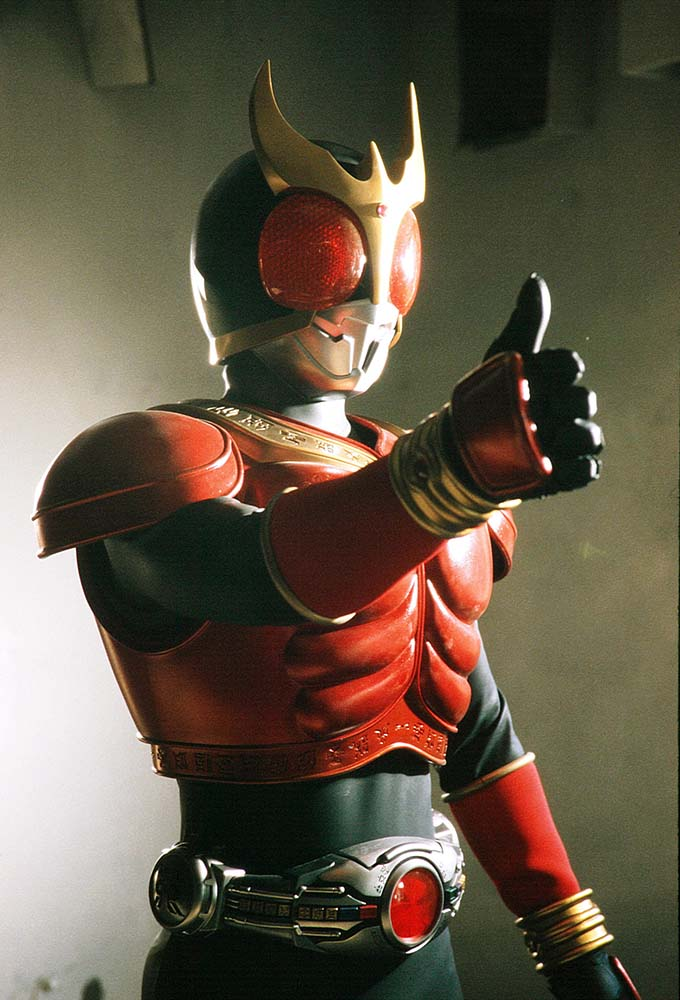
2000年から放送された「仮面ライダークウガ」に登場する仮面ライダー
変身者は五代雄介。古代リントの伝説の戦士「クウガ」の変身ベルトアークルを使い変身
状況に応じて様々な色に変化する。
基本形態は赤のクウガ（マイティフォーム）。
身長：200.0cm 体重：99.0kg パンチ力：3.0t キック力:10.0t ジャンプ力：ひと跳び15.0m 走力：100mを5.2秒程度
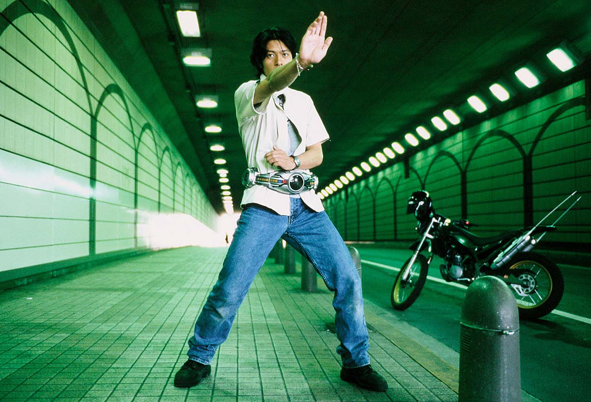
体に埋め込まれたアークルが出現し、変身の掛け声とともに変身する。
アークルの色に応じてクウガの色もその色に変わる。
アークルは変身者と連動しており、変身者が強くなることでアークルも強化される。
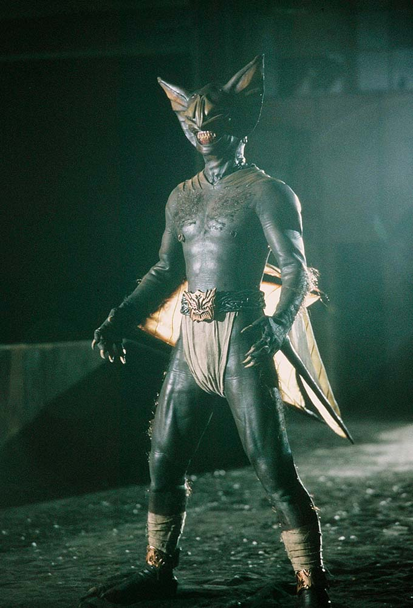
古代リントの時代に封印された怪物。
現代に封印が解かれ復活した。グロンギはゲゲルというゲームを行い、
ゲームに勝つことで次のグロンギの王が決まる。ゲゲルは決まった時間内で
何人の人間を殺すかというルールを達成できれば、クリアができる。
（例） ３時間で２０人
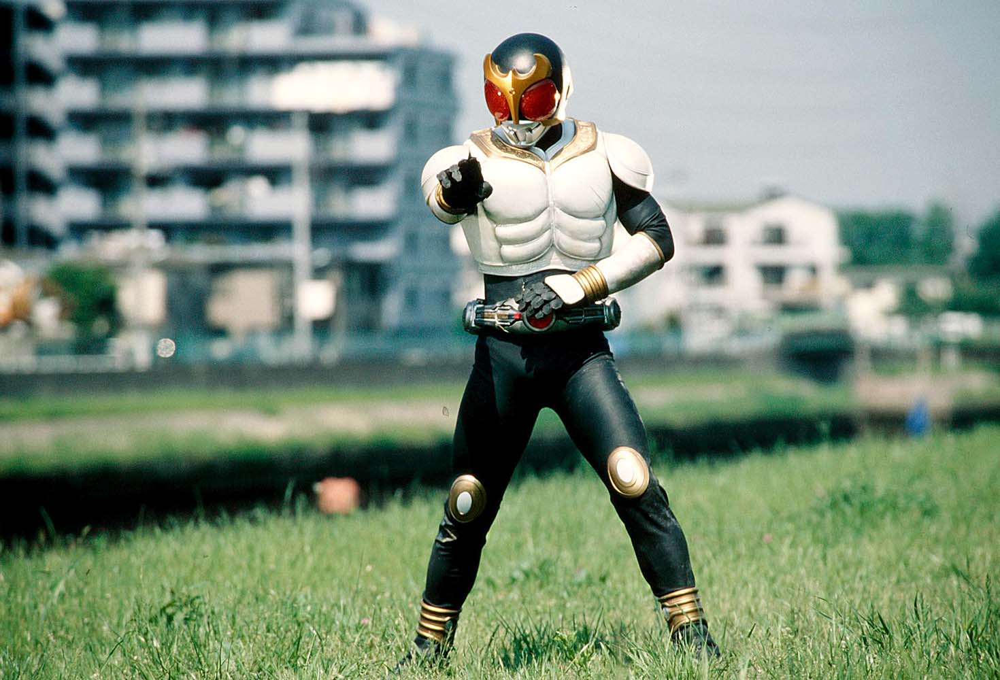
グローイングフォーム
未完成な形態。大きいダメージを受けた時や変身の意思が弱いときになる。
他の形態より弱く、能力もない。
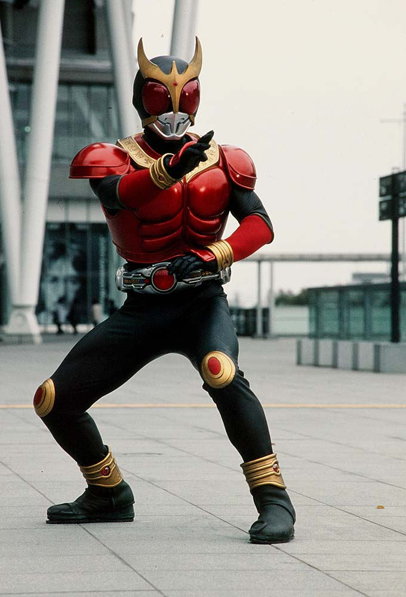
マイティフォーム
赤のクウガ
基本形態。純粋な近接戦闘に特化している。
人間の数十倍の運動能力と超感覚を持つ。
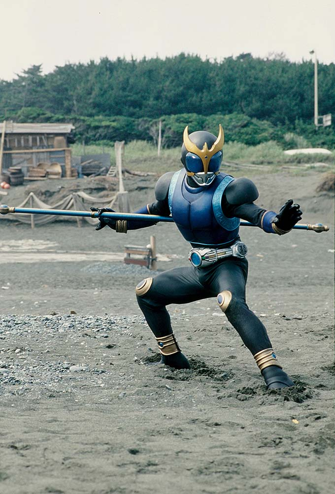
ドラゴンフォーム
青のクウガ
棒状武器「ドラゴンロッド」を用いた、拳法を主体とした戦闘が得意。
俊敏な動きができ、流れる水のごとく華麗に敵を打つ。
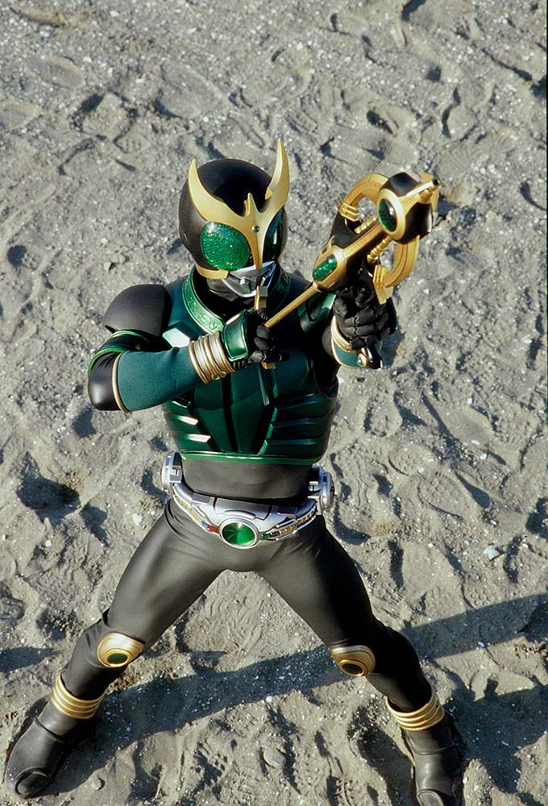
ペガサスフォーム
緑のクウガ
聴覚や視覚などの超感覚や、判断力や洞察の精神力が発達している。
専用武器「ペガサスボウガン」で百発百中の射撃能力を誇る。
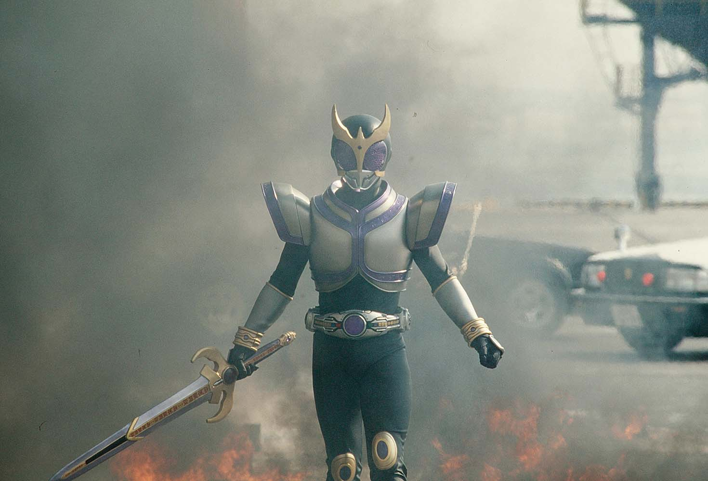
タイタンフォーム
紫のクウガ
腕力をはじめとした、運動能力が大幅に上昇し、鎧のような装甲は生半可な攻撃を通さない。
大剣「タイタンソード」での重い斬撃を放つ。
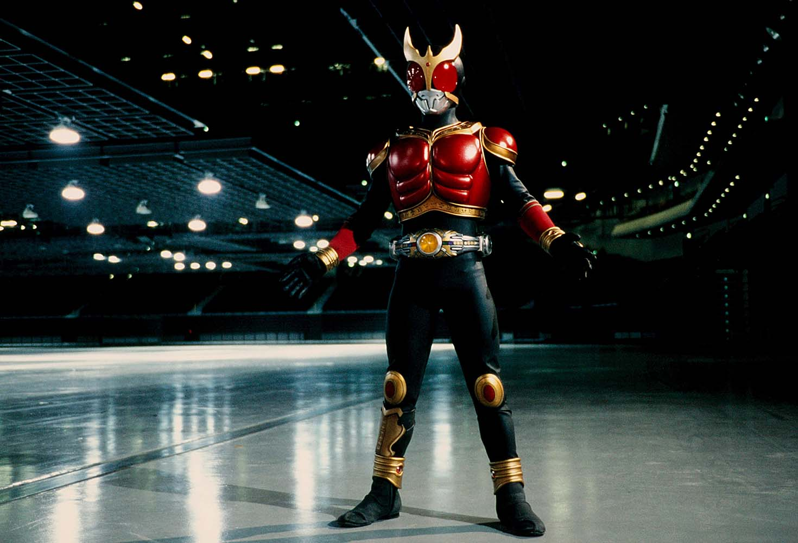
ライジングマイティフォーム
赤の金のクウガ
マイティフォームの強化形態。
活動時間はわずか30秒、必殺技のライジングマイティキックは半径３ｋｍ
にも及ぶ衝撃波を発生させる。
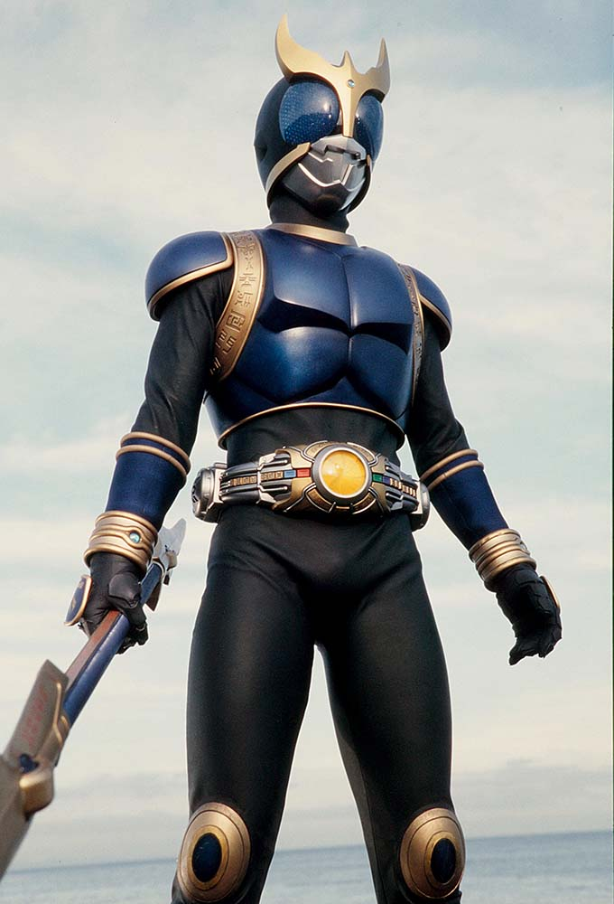
ライジングドラゴンフォーム
青の金のクウガ
ドラゴンフォームの強化形態。
強化された運動能力で「ライジングドラゴンロッド」を用いた、連続攻撃を得意とする。
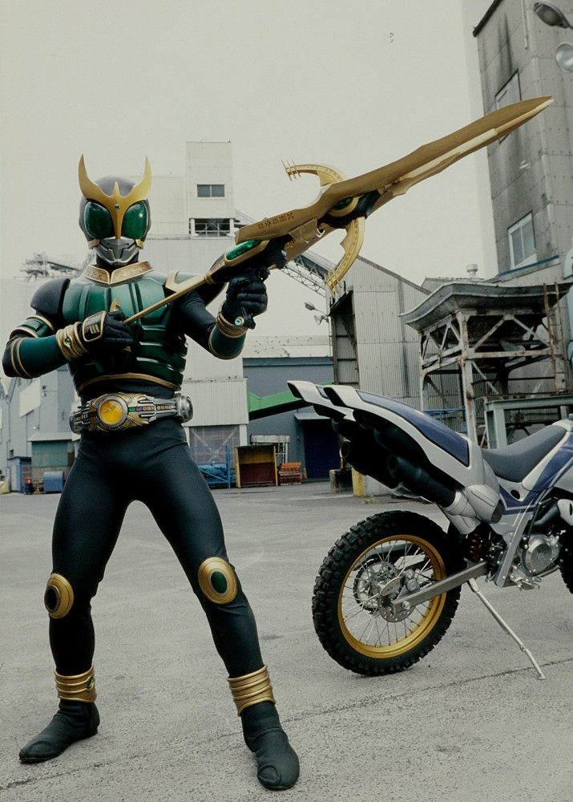
ライジングペガサスフォーム
緑の金のクウガ
ペガサスフォームの強化形態。
一層研ぎ澄まされた超感覚により、「ライジングペガサスボウガン」での長距離射撃で
確実に敵を仕留める。
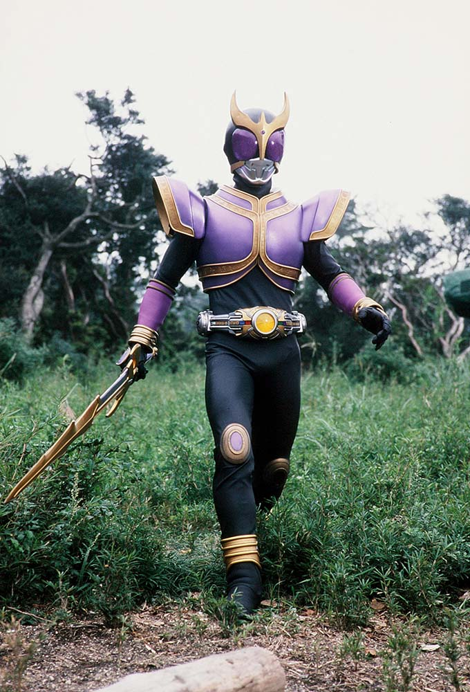
ライジングタイタンフォーム
紫の金のクウガ
タイタンフォームの強化形態。
強化された腕力で「ライジングタイタンソード」を用いた、重い斬撃を得意とする。
装甲も強化されており、このフォームにダメージを与えるのは至難の業。
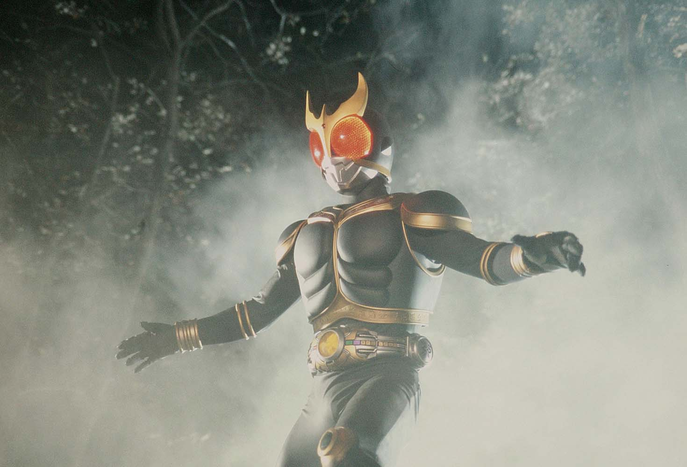
アメイジングマイティフォーム
黒の金のクウガ
ライジングフォームの強化形態。
漆黒のボディを持ち、必殺技の「アメイジングマイティキック」は、
相手の肉体を残さないほどの破壊力を誇る。
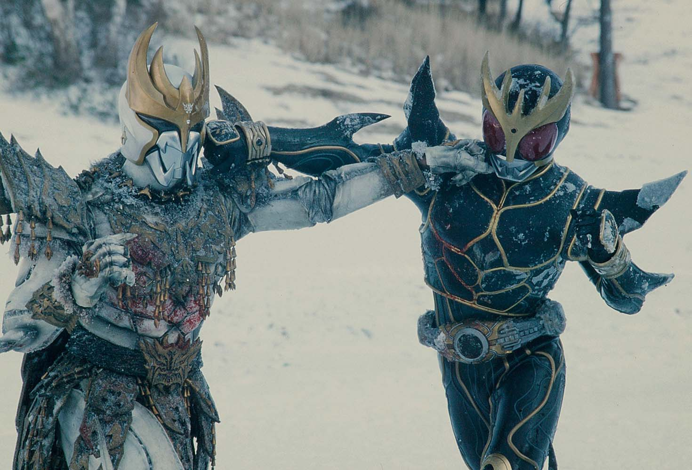
アルティメットフォーム
クウガの究極形態。
圧倒的な戦闘能力と、超自然発火能力を持つ。
古代では「究極の闇をもたらす者」と呼ばれていた。
仮面ライダー一覧